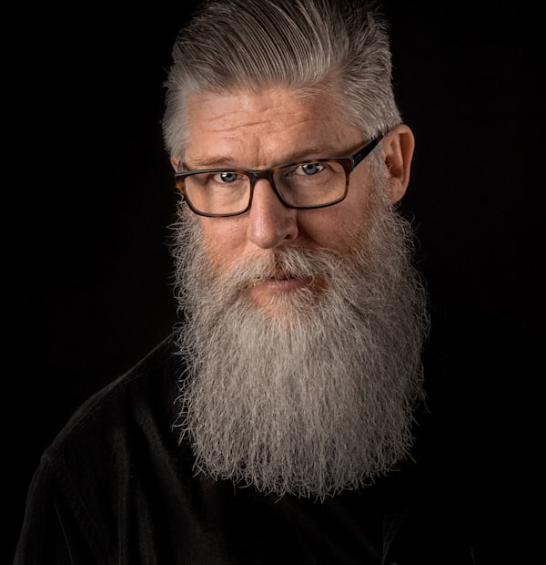

Who
We
Are
A Team Of
Automation Experts
Example Brand started as a tool to take one team's busywork off their plate.
We built internal tooling to clear a finance team's repetitive operations work. But the moment it shipped, every other team wanted their backlog gone too — and our small services shop grew fast.
We realised point tools don't scale: each one quietly centralises the work back onto us. So we turned the platform into autonomous agents that drop into your existing stack — SAP, Salesforce, Epic, custom spreadsheets — and run the routine work in production. Now your operators keep the judgment; Example Brand just takes the busywork away.

“The best incident is the one you never hear about.” — Marcus Aurelius, probably — Rambo

